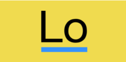

gulp.js
基于流的自动化构建工具。
gulp.js-基于流(stream)的自动化构建工具。Grun!采用配置的方式执行任务，而Gulp一切都通过代码实现。

LESS
JavaScript工具库
Lodash是一个具有一致接口，模块化，高性能等特性的JavaScript工具库。比相同功能的Underscore.js使用更广泛。

Lodash
JavaScript工具库
Lodash是一个具有一致接口，模块化，高性能特性的JavaScript工具库。比相同功能的Underscore.js使用更广泛
Underscore.js
JavaScript工具库
Underscore.js是一个JavaScript工具库，他提供了一套函数式编程的使用功能，弥补了jQuery没有实现的功能，同时又是Backbone必不可少的布冯。